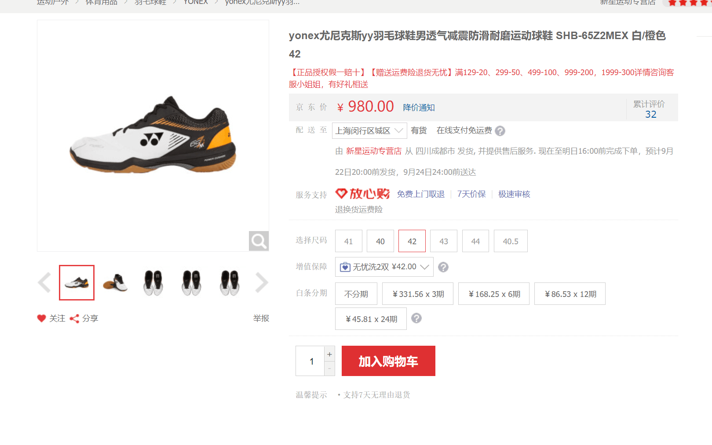

44_Blog
本文最后更新于：2023年1月5日 晚上
随记，只是想写一点东西了
唔，我想想要说一点什么
哦，之前买了一双羽毛球鞋，是Yonex的SHB-65Z2MEX，颜色是白/橙色（不是两个选一个，而是一半白、一半橙）

是找sjr推荐的，话说回来之前寒假的时候新买了一把羽毛球拍也是在sjr的。。建议之下才买的。。买的是弓箭11,也就是我现在一直在用的拍子
价格没有图片上那么夸张。。不过如果是我自己买的话我可能就买这个了，虽然很贵，但我是相信sjr的水平的，不过他给了我推荐了一个值得信赖的淘宝店家（我发现和买拍子的是同一家），就花了刚刚好600块钱，感觉还是可以接受的（笑）不得不说不买自营或者官方很多时候会便宜很多，但我又常常不是很愿意去花时间花精力并且承担买的东西不合适带来的不适，所以可能并不是很理想。。
我正常的鞋子是44码的，说是羽毛球鞋要大一点，但是这个颜色的大一点的已经没有了，如果穿起来感觉不合适的话可能要换一双更贵一点的。。那个有大码
！！！这学期我要好好练一练、好好学一学羽毛球，希望能够打的好一点，我觉得有必要再学一学，但是这学期课也比较多。。也没有办法一周打个两三次像知乎上面一样
上面部分是周二晚上写的。。写了一半neol问我一道c++的题目。。后面我就没有再写下去了，现在是周三晚上了
感情。。我觉得这样一个话题除了我自己，一般情况下我还是不写昵称或者别的任何称谓了，这样大概可以保证除了我和对方之外没有人看得懂（好像我以前一直是这样的）
本来也没有太想写一点什么的。。但是又有一点事情
话说回来，我一个没什么经验的人，又怎么去操心别人呢。。
但感觉很多事情都是相似的吧，我觉得我下午说的一些话总体上来说还是有道理的
可能很多时候，你要找到一个各方面和你都很契合的人是一件很困难的事情，或者说几乎不可能，但是在相处的过程中，应该注意到对方的闪光点，注意到对方的优点，寻找一些可以支撑下去的支柱吧，当然这个过程也还是需要一些缘分的吧（笑）我是没有很乐观了，因为我觉得我自己在这个问题上有比较强的。。行为方式吧。。我并没有想好，甚至也不真切认为能够开始一段感情，当然，这也是失意之语（笑），不过话说回来，谁在志得意满之时会反思呢
也许很多时候会觉得很累，会觉得沟通起来不是很流畅，会觉得价值观不太一样（因为我都经历过的。。）这些都是会消磨耐心的东西吧，不过说实在话我也不知道怎么去处理，而且还有很多更加复杂的事情在未来，如此一说，就像写代码一样，不停地迭代，不停地优化，最后达到一个近于最优的解，可能是这样的吧，在这个过程中也肯定会有一些遗憾之处。。
说实在话，我思考感情问题的时候都是生活比较空虚的时候，这或许可以解释我为什么一周更新一篇blog——我一般做五休二或者做四休三，一周总归有那么一段时间是给自己用来放松的，而放假的时候总体上是比较。。虚无的充实吧，也就没有大量的充实的时间和让自己的精神充分放松的时间，也就不太会写blog，当然也是因为不在学校，没有那么多姿多彩的生活
今天下午去参加了音乐剧社的面试，本来说是想要去策划的，因为这个事实上不需要我会什么、做什么，但是后面也算是报了一个舞美组，想的是能够打破自己的舒适圈，探索一条不太一样的道路，面试完之后去打羽毛球，先和neol打了半个小时左右吧，后面去打了三场双打，说实话很过瘾，我觉得发挥出我的水平了，可能前面半个小时热身热的比较充分，总之真的打的很开心
木木手还受伤了。。说实在话我不是很能理解。。她好像经常受伤。。不过幸好没有到要打石膏的程度，算是不幸中的万幸
电路理论的成绩也出来了，过了，别人都觉得这是正常的，不会不过的，不过说实在话，我是一直提心吊胆的。。很担心真的会挂科。。因为缓考的卷子说实在话并不简单，我也对我的水平没有那么有自信，不过过了总算是好的，我算是正式成为了一个大二学生了，要和大一挥挥手告别了
哦，还有，之前看了《cloud atlas》，这是owl推荐的一部电影，我觉得拍的挺不错的，主要是叙事的结构上面，是真的挺不错的，六个故事，巧妙地剪辑，我觉得表达效果是很好的，影片的内容也可以说是有点意思，还是挺推荐的，不过不要看中文版，一部170分钟的片子，中文版删减了40分钟。。虽然可能确实有一些不适合18岁一下观看的内容，但是删了这么多，这部电影的表现力无疑会大打折扣
就这样吧，新学期开始了！
哦，推荐一首歌，我挺喜欢的，毛不易的《深夜一角》，说实话我觉得毛不易的歌很对我胃口
本博客所有文章除特别声明外，均采用 CC BY-SA 4.0 协议 ，转载请注明出处！